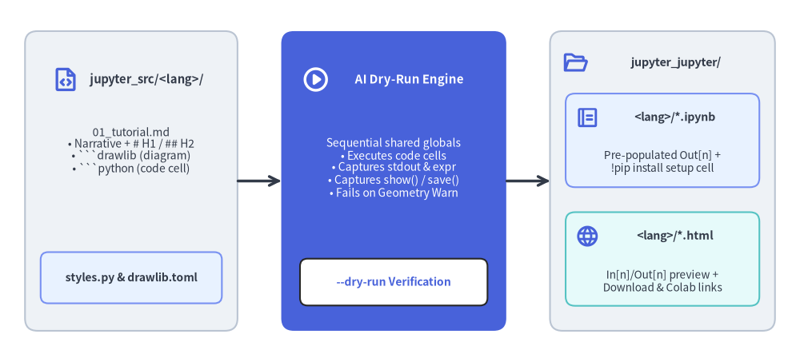

Jupyter & Colab Notebook Project Guide (drawlib init project jupyter)
The jupyter starter template brings "Illustrated Notebook & Google Colab as Code" to Drawlib. Instead of versioning monolithic, diff-hostile .ipynb JSON files with stale binary outputs, you author narrative prose, architectural diagrams (```drawlib), and interactive Python exercises (```python or ```drawlib cell=code) in clean Markdown (jupyter_src/<lang>/**/*.md)—compiling simultaneously into a unified web & notebook bundle (jupyter_jupyter/ or jupyter_html/) containing executable Jupyter Notebooks (<lang>/*.ipynb) and a two-column HTML preview website (<lang>/*.html + root index.html with In [n] / Out[n] cells, .ipynb download, and Open in Colab) verified by an in-process AI Dry-Run engine:

Source Code
from drawlib.canvas import save, setup
from drawlib.icons import phosphor
from drawlib.lines import line
from drawlib.shapes import rectangle
from drawlib.styles import Styles
from drawlib.text import text
setup(width=128, height=58)
# Left: Markdown Notebook Source
rectangle((21, 29), width=34, height=48, style=Styles.Neutral.patch(shape_r=2.0))
phosphor.file_code((10.5, 45.2), width=4.4, style=Styles.PrimaryBold)
text((23.5, 45.2), "jupyter_src/<lang>/", style=Styles.DarkBold.patch(text_size=10.6))
text(
(21, 33.8),
"01_tutorial.md\n• Narrative + # H1 / ## H2\n• ```drawlib (diagram)\n• ```python (code cell)",
style=Styles.Dark.patch(text_size=10.0),
)
rectangle(
(21, 13.5),
width=29,
height=8.2,
style=Styles.PrimaryNeutral.patch(shape_r=1.2),
text="styles.py & drawlib.toml",
text_style=Styles.DarkBold.patch(text_size=10.0),
)
# Middle: In-Process AI Dry-Run Engine
line((38, 29), (45, 29), arrow_head="->", style=Styles.DarkBold)
rectangle((63, 29), width=36, height=48, style=Styles.PrimaryFlat.patch(shape_r=2.0))
phosphor.play_circle((50.5, 45.2), width=4.6, style=Styles.WhiteBold)
text((65.5, 45.2), "AI Dry-Run Engine", style=Styles.WhiteBold.patch(text_size=10.8))
text(
(63, 31.0),
"Sequential shared globals\n• Executes code cells\n• Captures stdout & expr\n• Captures show() / save()\n• Fails on Geometry Warn",
style=Styles.White.patch(text_size=10.0),
)
rectangle(
(63, 12.8),
width=30,
height=7.5,
style=Styles.White.patch(shape_r=1.2),
text="--dry-run Verification",
text_style=Styles.PrimaryBold.patch(text_size=10.0),
)
# Right: Unified Output Bundle (jupyter_jupyter/ or jupyter_html/)
line((81, 29), (88, 29), arrow_head="->", style=Styles.DarkBold)
rectangle((106, 29), width=36, height=48, style=Styles.Neutral.patch(shape_r=2.0))
phosphor.folder_open((92.0, 48.0), width=4.2, style=Styles.PrimaryBold)
text((108.2, 48.0), "jupyter_jupyter/", style=Styles.DarkBold.patch(text_size=10.4))
rectangle((106, 35.5), width=31, height=15.0, style=Styles.PrimaryNeutral.patch(shape_r=1.5))
phosphor.notebook((94.0, 39.2), width=3.8, style=Styles.PrimaryBold)
text((108.0, 39.2), "<lang>/*.ipynb", style=Styles.DarkBold.patch(text_size=10.2))
text((106, 32.0), "Pre-populated Out[n] +\n!pip install setup cell", style=Styles.Dark.patch(text_size=9.8))
rectangle((106, 16.5), width=31, height=15.0, style=Styles.SecondaryNeutral.patch(shape_r=1.5))
phosphor.globe((94.0, 20.2), width=3.8, style=Styles.PrimaryBold)
text((108.0, 20.2), "<lang>/*.html", style=Styles.DarkBold.patch(text_size=10.2))
text((106, 13.0), "In[n]/Out[n] preview +\nDownload & Colab links", style=Styles.Dark.patch(text_size=9.8))
save()
1. Why Author Jupyter & Colab Notebooks in Markdown?
Maintaining tutorials, data-science guides, and hands-on workshops directly inside .ipynb JSON files introduces friction for engineering teams and AI coding agents:
Challenge with Raw .ipynb Files |
How Drawlib's jupyter Project Solves It |
|---|---|
| Noisy Git Diffs: Base64 PNG blobs and execution counters clutter pull requests. | Clean Markdown Source (jupyter_src/<lang>/*.md): Author plain-text Markdown with fenced ```drawlib and ```python blocks; .ipynb and HTML outputs are deterministic build artifacts. |
| Broken Cells & Stale Outputs: Out-of-order manual cell execution leaves hidden state bugs. | In-Process AI Dry-Run (execute = true / --dry-run): Executes every notebook top-to-bottom in a fresh shared globals namespace on build, failing immediately on any exception or [Geometry Warning]. |
| Separate Web Docs vs. Notebooks: Teams duplicate effort maintaining web tutorials and Colab notebooks. | Bundled .ipynb + HTML Output: A single build outputs <lang>/*.html and <lang>/*.ipynb side-by-side in the same folder (jupyter_jupyter/ or jupyter_html/), so you can deploy directly to any custom domain without GitHub. |
Multi-Locale Duplication: Translating .ipynb notebooks into English and Japanese is error-prone. |
Native [i18n] Support (-l en,ja): Unified <src_dir>/<lang>/ directories with automatic language switcher and per-locale .ipynb outputs. |
Live Showcase: Explore Drawlib's own 6-chapter bilingual interactive tutorial built with
type = "jupyter"athttps://www.drawlib.com/jupyter/.
2. Scaffolding & Directory Layout
Initialize a single-locale or multi-locale jupyter project using drawlib init project jupyter:
# Default English jupyter project (creates jupyter_src/en/):
uv run drawlib init project jupyter
# Custom target name + bilingual (en,ja) + Google theme:
uv run drawlib init project jupyter tutorials -l en,ja -s google
# Fast AI Dry-Run verification (executes all cells, checks [Geometry Warning], writes no files):
uv run drawlib build jupyter jupyter_src/ --dry-run
# Compile bundled .ipynb notebooks + HTML preview site into jupyter_jupyter/:
./jupyter_src/build.sh
# Validate HTML preview links and bundled .ipynb assets headlessly:
uv run drawlib serve jupyter_jupyter/ --check
Scaffolded directory layout:
jupyter_src/
├── drawlib.toml # [MANDATORY] Project manifest (type = "jupyter", [i18n], [jupyter], optional [seo])
├── styles.py # Shared Drawlib Style / Color overrides (pre-loaded into notebook globals)
├── utils.py # Reusable Python helpers imported across notebooks
├── style.css # Responsive 2-column HTML preview stylesheet (includes In[n]/Out[n] cells)
├── template.html # Jinja2 HTML preview layout with Open in Colab & .ipynb download bar
├── _assets/ # Static images/logos & favicon.png (copied to output _assets/)
├── en/ # Locale notebook source directory (sorted naturally: 01_, 02_, ...)
│ ├── 01_sample_notebook.md # Notebook 1: Markdown narrative + drawlib diagrams + python code cells
│ └── README.md # Authoring guide (automatically excluded from notebook compilation)
├── build.sh # Master build script (compiles bundled .ipynb + HTML into jupyter_jupyter/)
├── build_jupyter.sh # Compile bundled .ipynb + HTML preview -> jupyter_jupyter/
├── build_html.sh # Alias for building bundled .ipynb + HTML preview -> jupyter_jupyter/
└── serve.sh # Local HTTP preview server (drawlib serve jupyter_jupyter/)
When compiled, the output directory (jupyter_jupyter/ or jupyter_html/) bundles .ipynb files right alongside .html pages:
jupyter_jupyter/ # Self-contained web & notebook bundle (deployable to any domain)
├── index.html # Root entry page (rebased from default_lang first notebook)
├── en/
│ ├── index.html
│ ├── 01_sample_notebook.html # 2-column HTML preview with "⬇ Download .ipynb" & "Open in Colab"
│ └── 01_sample_notebook.ipynb # Bundled executable Jupyter Notebook (linked relatively from HTML)
├── images/ # Shared diagram images across locales
└── _assets/ # Static assets & favicon
3. Dual Code Block Semantics (cell=markdown vs. cell=code)
Inside jupyter_src/<lang>/**/*.md, standard Markdown prose and headings (# H1, ## H2, tables, lists) become .ipynb markdown cells, while fenced code blocks are routed according to their language identifier (drawlib vs. python) and optional cell= attribute:
Fence Syntax in .md Source |
Compiled .ipynb Cell Type |
Compiled HTML Preview Output | Primary Use Case |
|---|---|---|---|
```drawlib file=arch.png caption="..."(default cell=markdown) |
markdown cell containing the rendered diagram (attachment:<file>.png, [seo].site_url URL, or relative path) |
Rendered <figure> diagram with optional <details> source fold (code=fold) |
Explanatory architecture, flow, sequence, or concept diagrams accompanying narrative text. |
```drawlib cell=code file=exercise.png(or [jupyter].drawlib_cell_mode = "code") |
code cell with save(...) rewritten to show() and pre-populated display_data (image/png) output |
Notebook In [n]: code cell + Out[n]: rendered figure |
Hands-on Drawlib coding exercises where learners modify coordinates/styles and re-run the cell in Jupyter/Colab. |
```python(default cell=code) |
code cell with pre-populated stdout, execute_result, and display_data outputs |
Notebook In [n]: code cell + Out[n]: execution output |
Live Python data preparation, state sharing across cells, or calling Drawlib APIs with setup(..., cwd=True) and show(). |
```python cell=markdown |
markdown cell containing a static syntax-highlighted Python snippet |
Standard static code block (not executed) | Non-executable reference pseudocode or configuration snippets. |

Source Code
from drawlib.canvas import save, setup
from drawlib.icons import phosphor
from drawlib.shapes import rectangle
from drawlib.smartarts import Table
from drawlib.styles import Colors, Styles
from drawlib.text import text
setup(width=128, height=58)
rectangle((64, 51.5), width=120, height=7.0, style=Styles.PrimaryNeutral.patch(shape_r=1.5))
phosphor.notebook((11.5, 51.5), width=4.4, style=Styles.PrimaryBold)
text(
(66.0, 51.5),
"Dual Code Block Routing: Narrative Diagrams (cell=markdown) vs. Live Code Cells (cell=code)",
style=Styles.DarkBold.patch(text_size=10.8),
)
tbl = Table(
cell_style=Styles.White,
text_style=Styles.Dark.patch(text_size=10.0),
header_cell_style=Styles.PrimaryFlat,
header_text_style=Styles.WhiteBold.patch(text_size=10.5),
border_style=Styles.MutedThin,
has_header=True,
)
tbl.set_style_cell_evenodd(
even_color=Colors.White,
even_text_style=Styles.Dark.patch(text_size=10.0),
odd_color=Styles.SecondaryNeutral.shape_fill_color or Colors.White,
odd_text_style=Styles.Dark.patch(text_size=10.0),
)
tbl.set_style_cell_header(
background_color=Styles.PrimaryFlat.shape_fill_color or Colors.Primary,
text_style=Styles.WhiteBold.patch(text_size=10.5),
)
tbl.draw_flexible(
xy=(4, 46.0),
column_widths=[34.0, 28.0, 30.0, 28.0],
row_heights=[8.2, 8.2, 8.2, 8.2, 8.2],
data=[
["Markdown Fence", ".ipynb Cell Type", "Dry-Run Execution", "HTML Preview Rendering"],
["```drawlib file=a.png", "markdown cell (Image)", "Sandboxed Diagram", "<figure> + code=fold"],
["```drawlib cell=code", "code cell (show())", "Shared Notebook Globals", "In [n]: Code + Out[n]: PNG"],
["```python", "code cell", "Shared Notebook Globals", "In [n]: Code + Out[n]: Text/PNG"],
["```python cell=markdown", "markdown cell (Code)", "Skipped (Static)", "Syntax-Highlighted Block"],
],
)
save()
Markdown Notebook Authoring Example (01_quickstart.md):
# Chapter 1: Drawlib Quickstart in Google Colab
Learn how to combine explanatory architecture diagrams with live, editable Python cells.
```drawlib align=center code=fold file=ch01_concept_arch.png caption="Explanatory Architecture Diagram (Rendered as a Markdown Cell)"
from drawlib.canvas import save, setup
from drawlib.shapes import rectangle
from drawlib.styles import Styles
setup(width=100, height=32)
rectangle((50, 16), width=76, height=18, style=Styles.PrimaryNeutral, text="Narrative Architecture Figure")
save()
```
## 1. Shared State Across Executable Python Cells
Variables defined in one `python` cell remain live in subsequent cells:
```python
# In [1]: Define shared layout metrics
CANVAS_W, CANVAS_H = 100, 36
nodes = ["Ingest", "Transform", "Serve"]
print(f"Configured {len(nodes)} pipeline stages on {CANVAS_W}x{CANVAS_H} canvas")
```
```python
# In [2]: Render inline using setup(..., cwd=True) and show()
from drawlib.canvas import setup, show
from drawlib.shapes import rectangle
from drawlib.styles import Styles
setup(width=CANVAS_W, height=CANVAS_H, cwd=True)
for idx, label in enumerate(nodes):
cx = 20 + idx * 30
st = Styles.PrimaryFlat if idx == 2 else Styles.Neutral
tst = Styles.WhiteBold if idx == 2 else Styles.DarkBold
rectangle((cx, 18), width=22, height=14, style=st, text=label, text_style=tst)
show()
```
4. Configuring [jupyter] & Google Colab Integration (drawlib.toml)
Configure notebook image embedding, default cell modes, !pip install setup cells, and Open in Colab links under [jupyter] in jupyter_src/drawlib.toml:
[project]
name = "jupyter"
type = "jupyter"
title = "Drawlib Interactive Notebooks"
description = "Interactive Jupyter & Google Colab Hands-on Tutorials"
style = "google"
[i18n]
default_lang = "en"
langs = ["en", "ja"]
[jupyter]
# Base URL prefix (auto-appends /<lang>/<stem>.ipynb) or {path} URL template:
colab_base_url = "https://colab.research.google.com/github/owner/repo/blob/main/jupyter_jupyter"
setup_packages = ["drawlib"] # Prepends an auto-generated `!pip install -q drawlib` cell when non-empty
drawlib_cell_mode = "markdown" # Default for ```drawlib fences: "markdown" | "code"
image_mode = "attachment" # "attachment" (self-contained) | "url" ([seo].site_url) | "relative"
execute = true # Sequentially dry-run all code cells during build and populate outputs
# [seo]
# site_url = "https://example.com/jupyter" # Used when image_mode = "url" (plus canonical/OGP/sitemap tags)
4.1. [jupyter] Reference Table
| Key | Type | Default | Behavior |
|---|---|---|---|
colab_base_url |
str |
"" |
Base URL or {path} URL template for the Open in Colab button injected into .ipynb notebooks and HTML preview pages:
|
setup_packages |
list[str] |
["drawlib"] |
When non-empty, prepends an executable setup cell (!pip install -q drawlib) at the top of each compiled .ipynb notebook so Google Colab users can run the notebook immediately with zero manual setup. |
drawlib_cell_mode |
"markdown" | "code" |
"markdown" |
Project-wide default cell mode for ```drawlib blocks when cell= is omitted on the fence. |
image_mode |
"attachment" | "url" | "relative" |
"attachment" |
Controls how cell=markdown ```drawlib diagrams are referenced inside .ipynb Markdown cells:
|
execute |
bool |
true |
When true, executes all code cells sequentially in-process during build and embeds stdout, expression results, and show() / save() figures into both .ipynb and HTML preview outputs. |
4.2. Title & Sidebar Brand Header Resolution (drawlib.toml vs. # H1)
In the compiled HTML preview site (jupyter_jupyter/ or jupyter_html/):
- Left Sidebar Brand Header (
site_title): Prioritizesdrawlib.toml[project].title-> optional<lang>/navbar.md# H1->"Notebooks". - Browser Tab
<title>: Combines the current notebook's first# H1heading andsite_titleas<Notebook H1> — <site_title>. - Sidebar Navigation Tree: Automatically extracted from each
.mdfile's# H1(notebook link) and## H2headings (section links) with an instant/filter—no manualnavbar.mdmaintenance required.
5. Deterministic Path Resolution in Notebooks (setup(..., cwd=True))
In standard .py scripts, setup(width=..., height=...) defaults to cwd=False, resolving relative paths (save("chart.png"), image("logo.png"), Dimage("photo.png")) relative to the directory of the calling Python script.
In interactive JupyterLab or Google Colab notebooks, code cells execute inside a temporary kernel frame rather than a .py file on disk. Pass cwd=True to setup() inside notebook code cells so relative paths resolve deterministically against os.getcwd():
from drawlib.canvas import save, setup, show
from drawlib.shapes import rectangle
from drawlib.styles import Styles
# Resolve all relative paths (save(), image(), Dimage()) against os.getcwd():
setup(width=100, height=40, cwd=True)
rectangle((50, 20), width=70, height=22, style=Styles.PrimaryNeutral, text="Interactive Notebook Cell")
show() # Displays inline in Jupyter/Colab and is captured by drawlib build jupyter
- When
setup(..., cwd=True)is active:save("out.png")writes to<os.getcwd()>/out.png(andsave()with no filename writes to<os.getcwd()>/output.png).image("data/pic.png")andDimage("data/pic.png")read from<os.getcwd()>/data/pic.png.
- Calling
clear()resetscwdback toFalse.
6. CLI Build & In-Process AI Dry-Run Verification (drawlib build jupyter)
Compile bundled .ipynb + HTML preview directories or run fast dry-run verification via drawlib build jupyter:
# 1. Fast in-process AI Dry-Run (executes all cells, checks [Geometry Warning], writes no files):
uv run drawlib build jupyter jupyter_src/ --dry-run
# 2. Compile bundled .ipynb notebooks + HTML preview site into jupyter_jupyter/:
uv run drawlib build jupyter jupyter_src/ -o jupyter_jupyter/
# 3. Or compile via drawlib build html (also bundles .ipynb alongside .html in jupyter_html/):
uv run drawlib build html jupyter_src/ -o jupyter_html/
| Option | Shorthand | Default | Description |
|---|---|---|---|
--output |
-o |
<base>_jupyter/ |
Destination output directory path (or .ipynb file path for single-file build). |
--format |
-f |
png |
Image output format for embedded drawlib blocks (png or webp). |
--styles / --utils |
-s / -u |
Auto-resolved | Path to styles.py and utils.py (pre-loaded into notebook execution globals). |
--execute / --no-execute |
None (from [jupyter].execute) |
Execute code cells sequentially in-process and populate .ipynb and HTML cell outputs. |
|
--dry-run |
False |
Execute all cells and validate [Geometry Warning] without writing output files to disk. |
|
--no-cache |
False |
Bypass .drawlib/cache.db and re-execute all diagram blocks. |
|
--workers |
-w |
auto |
Parallel worker process count (auto uses 1 <= (CPU cores - 1) <= 8). |
What the In-Process AI Dry-Run Engine Verifies:
- Shared State Across Cells: Cell 1's variables, functions, and imports are live in Cell 2, Cell 3, etc., matching real Jupyter/Colab kernel behavior (
styles.pyandutils.pyare pre-loaded into the notebook namespace). - Zero Unhandled Exceptions: Any
SyntaxError,NameError,TypeError, or Drawlib validation error halts the build and reports the exact notebook path, cell number (In [n]), and traceback. - Zero
[Geometry Warning]: Any canvas clipping, out-of-bounds artist, or overlap warning emitted during eithercell=markdowndiagram rendering orcell=codeexecution fails the build (NotebookExecutionError). - Captured Outputs (
In [n]/Out[n]): Standard output (print(...)), final cell expressions (text/plain), andshow()/save()figures (image/png) are embedded into both the.ipynbcelloutputsarray and the HTML preview page so readers can inspect outputs immediately in the browser before launching Google Colab.